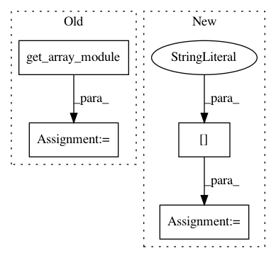

88fd013c122905fbda18d9676074bc73e3e15030,chainerrl/agents/residual_dqn.py,ResidualDQN,_compute_y_and_t,#ResidualDQN#Any#Any#,45
Before Change
[elem["state"] for elem in experiences])
qout = self.q_function(batch_state, test=False)
xp = cuda.get_array_module(qout.greedy_actions.data)
batch_actions = chainer.Variable(
xp.asarray([elem["action"] for elem in experiences]))
batch_q = F.reshape(qout.evaluate_actions(
batch_actions), (batch_size, 1))
batch_q_target = F.reshape(
After Change
def _compute_y_and_t(self, exp_batch, gamma):
batch_state = exp_batch["state"]
batch_size = len(batch_state)
// Compute Q-values for current states
qout = self.q_function(batch_state, test=False)
In pattern: SUPERPATTERN
Frequency: 3
Non-data size: 4
Instances
Project Name: chainer/chainerrl
Commit Name: 88fd013c122905fbda18d9676074bc73e3e15030
Time: 2017-01-16
Author: muupan@gmail.com
File Name: chainerrl/agents/residual_dqn.py
Class Name: ResidualDQN
Method Name: _compute_y_and_t
Project Name: chainer/chainerrl
Commit Name: 7cebf32b75ef71ea8e367579c71fea84deaac91b
Time: 2017-01-15
Author: muupan@gmail.com
File Name: chainerrl/agents/dpp.py
Class Name: AbstractDPP
Method Name: _compute_y_and_t
Project Name: chainer/chainercv
Commit Name: 8060a6afa8c754d7914aac5e7655294758a8449f
Time: 2017-05-07
Author: yuyuniitani@gmail.com
File Name: tests/utils_tests/bbox_tests/test_non_maximum_suppression.py
Class Name: TestNonMaximumSuppressionOptions
Method Name: check_non_maximum_suppression_options